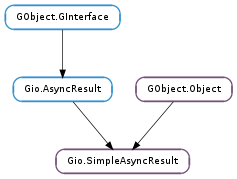

| static | is_valid(result, source, source_tag) |
| static | new(source_object, callback, user_data, source_tag) |
| complete() | |
| complete_in_idle() | |
| get_op_res_gboolean() | |
| get_op_res_gssize() | |
| propagate_error() | |
| set_check_cancellable(check_cancellable) | |
| set_handle_cancellation(handle_cancellation) | |
| set_op_res_gboolean(op_res) | |
| set_op_res_gssize(op_res) |
None
None
Bases: GObject.Object, Gio.AsyncResult
As of GLib 2.36, Gio.SimpleAsyncResult is deprecated in favor of Gio.Task, which provides a simpler API.
Gio.SimpleAsyncResult implements Gio.AsyncResult.
Gio.SimpleAsyncResult handles Gio.AsyncReadyCallback s, error reporting, operation cancellation and the final state of an operation, completely transparent to the application. Results can be returned as a pointer e.g. for functions that return data that is collected asynchronously, a boolean value for checking the success or failure of an operation, or a #gssize for operations which return the number of bytes modified by the operation; all of the simple return cases are covered.
Most of the time, an application will not need to know of the details of this API; it is handled transparently, and any necessary operations are handled by Gio.AsyncResult ‘s interface. However, if implementing a new GIO module, for writing language bindings, or for complex applications that need better control of how asynchronous operations are completed, it is important to understand this functionality.
GSimpleAsyncResults are tagged with the calling function to ensure that asynchronous functions and their finishing functions are used together correctly.
To create a new Gio.SimpleAsyncResult, call Gio.SimpleAsyncResult.new (). If the result needs to be created for a GLib.Error, use Gio.SimpleAsyncResult.new_from_error () or Gio.SimpleAsyncResult.new_take_error (). If a GLib.Error is not available (e.g. the asynchronous operation’s doesn’t take a GLib.Error argument), but the result still needs to be created for an error condition, use Gio.SimpleAsyncResult.new_error () (or Gio.SimpleAsyncResult.set_error_va () if your application or binding requires passing a variable argument list directly), and the error can then be propagated through the use of Gio.SimpleAsyncResult.propagate_error ().
An asynchronous operation can be made to ignore a cancellation event by calling Gio.SimpleAsyncResult.set_handle_cancellation () with a Gio.SimpleAsyncResult for the operation and False. This is useful for operations that are dangerous to cancel, such as close (which would cause a leak if cancelled before being run).
Gio.SimpleAsyncResult can integrate into GLib’s event loop, GLib.MainLoop, or it can use GLib.Thread s. Gio.SimpleAsyncResult.complete () will finish an I/O task directly from the point where it is called. Gio.SimpleAsyncResult.complete_in_idle () will finish it from an idle handler in the thread-default main context. Gio.SimpleAsyncResult.run_in_thread () will run the job in a separate thread and then deliver the result to the thread-default main context.
To set the results of an asynchronous function, Gio.SimpleAsyncResult.set_op_res_gpointer (), Gio.SimpleAsyncResult.set_op_res_gboolean (), and Gio.SimpleAsyncResult.set_op_res_gssize () are provided, setting the operation’s result to a object, bool, or gssize, respectively.
Likewise, to get the result of an asynchronous function, Gio.SimpleAsyncResult.get_op_res_gpointer (), Gio.SimpleAsyncResult.get_op_res_gboolean (), and Gio.SimpleAsyncResult.get_op_res_gssize () are provided, getting the operation’s result as a object, bool, and gssize, respectively.
For the details of the requirements implementations must respect, see Gio.AsyncResult. A typical implementation of an asynchronous operation using Gio.SimpleAsyncResult looks something like this:
static void
baked_cb (Cake *cake,
gpointer user_data)
{
/* In this example, this callback is not given a reference to the cake, so
* the GSimpleAsyncResult has to take a reference to it.
*/
GSimpleAsyncResult *result = user_data;
if (cake == NULL)
g_simple_async_result_set_error (result,
BAKER_ERRORS,
BAKER_ERROR_NO_FLOUR,
"Go to the supermarket");
else
g_simple_async_result_set_op_res_gpointer (result,
g_object_ref (cake),
g_object_unref);
/* In this example, we assume that baked_cb is called as a callback from
* the mainloop, so it's safe to complete the operation synchronously here.
* If, however, _baker_prepare_cake () might call its callback without
* first returning to the mainloop — inadvisable, but some APIs do so —
* we would need to use g_simple_async_result_complete_in_idle().
*/
g_simple_async_result_complete (result);
g_object_unref (result);
}
void
baker_bake_cake_async (Baker *self,
guint radius,
GAsyncReadyCallback callback,
gpointer user_data)
{
GSimpleAsyncResult *simple;
Cake *cake;
if (radius < 3)
{
g_simple_async_report_error_in_idle (G_OBJECT (self),
callback,
user_data,
BAKER_ERRORS,
BAKER_ERROR_TOO_SMALL,
"%ucm radius cakes are silly",
radius);
return;
}
simple = g_simple_async_result_new (G_OBJECT (self),
callback,
user_data,
baker_bake_cake_async);
cake = _baker_get_cached_cake (self, radius);
if (cake != NULL)
{
g_simple_async_result_set_op_res_gpointer (simple,
g_object_ref (cake),
g_object_unref);
g_simple_async_result_complete_in_idle (simple);
g_object_unref (simple);
/* Drop the reference returned by _baker_get_cached_cake(); the
* GSimpleAsyncResult has taken its own reference.
*/
g_object_unref (cake);
return;
}
_baker_prepare_cake (self, radius, baked_cb, simple);
}
Cake *
baker_bake_cake_finish (Baker *self,
GAsyncResult *result,
GError **error)
{
GSimpleAsyncResult *simple;
Cake *cake;
g_return_val_if_fail (g_simple_async_result_is_valid (result,
G_OBJECT (self),
baker_bake_cake_async),
NULL);
simple = (GSimpleAsyncResult *) result;
if (g_simple_async_result_propagate_error (simple, error))
return NULL;
cake = CAKE (g_simple_async_result_get_op_res_gpointer (simple));
return g_object_ref (cake);
}
| Parameters: |
|
|---|---|
| Returns: | |
| Return type: |
Ensures that the data passed to the _finish function of an async operation is consistent. Three checks are performed.
First, result is checked to ensure that it is really a Gio.SimpleAsyncResult. Second, source is checked to ensure that it matches the source object of result. Third, source_tag is checked to ensure that it is either None (as it is when the result was created by Gio.simple_async_report_error_in_idle () or Gio.simple_async_report_gerror_in_idle ()) or equal to the source_tag argument given to Gio.SimpleAsyncResult.new () (which, by convention, is a pointer to the _async function corresponding to the _finish function from which this function is called).
| Parameters: |
|
|---|---|
| Returns: | |
| Return type: |
Creates a Gio.SimpleAsyncResult.
The common convention is to create the Gio.SimpleAsyncResult in the function that starts the asynchronous operation and use that same function as the source_tag.
If your operation supports cancellation with Gio.Cancellable (which it probably should) then you should provide the user’s cancellable to Gio.SimpleAsyncResult.set_check_cancellable () immediately after this function returns.
Completes an asynchronous I/O job immediately. Must be called in the thread where the asynchronous result was to be delivered, as it invokes the callback directly. If you are in a different thread use Gio.SimpleAsyncResult.complete_in_idle ().
Calling this function takes a reference to simple for as long as is needed to complete the call.
Completes an asynchronous function in an idle handler in the thread-default main loop of the thread that simple was initially created in (and re-pushes that context around the invocation of the callback).
Calling this function takes a reference to simple for as long as is needed to complete the call.
| Returns: | True if the operation’s result was True, False if the operation’s result was False. |
|---|---|
| Return type: | bool |
Gets the operation result boolean from within the asynchronous result.
| Returns: | a gssize returned from the asynchronous function. |
|---|---|
| Return type: | int |
Gets a gssize from the asynchronous result.
| Raises: | GLib.GError |
|---|---|
| Returns: | True if the error was propagated to dest. False otherwise. |
| Return type: | bool |
Propagates an error from within the simple asynchronous result to a given destination.
If the Gio.Cancellable given to a prior call to Gio.SimpleAsyncResult.set_check_cancellable () is cancelled then this function will return True with dest set appropriately.
| Parameters: | check_cancellable (Gio.Cancellable or None) – a Gio.Cancellable to check, or None to unset |
|---|
Sets a Gio.Cancellable to check before dispatching results.
This function has one very specific purpose: the provided cancellable is checked at the time of Gio.SimpleAsyncResult.propagate_error () If it is cancelled, these functions will return an “Operation was cancelled” error (Gio.IOErrorEnum.CANCELLED ).
Implementors of cancellable asynchronous functions should use this in order to provide a guarantee to their callers that cancelling an async operation will reliably result in an error being returned for that operation (even if a positive result for the operation has already been sent as an idle to the main context to be dispatched).
The checking described above is done regardless of any call to the unrelated Gio.SimpleAsyncResult.set_handle_cancellation () function.
| Parameters: | handle_cancellation (bool) – a bool. |
|---|
Sets whether to handle cancellation within the asynchronous operation.
This function has nothing to do with Gio.SimpleAsyncResult.set_check_cancellable (). It only refers to the Gio.Cancellable passed to Gio.SimpleAsyncResult.run_in_thread ().